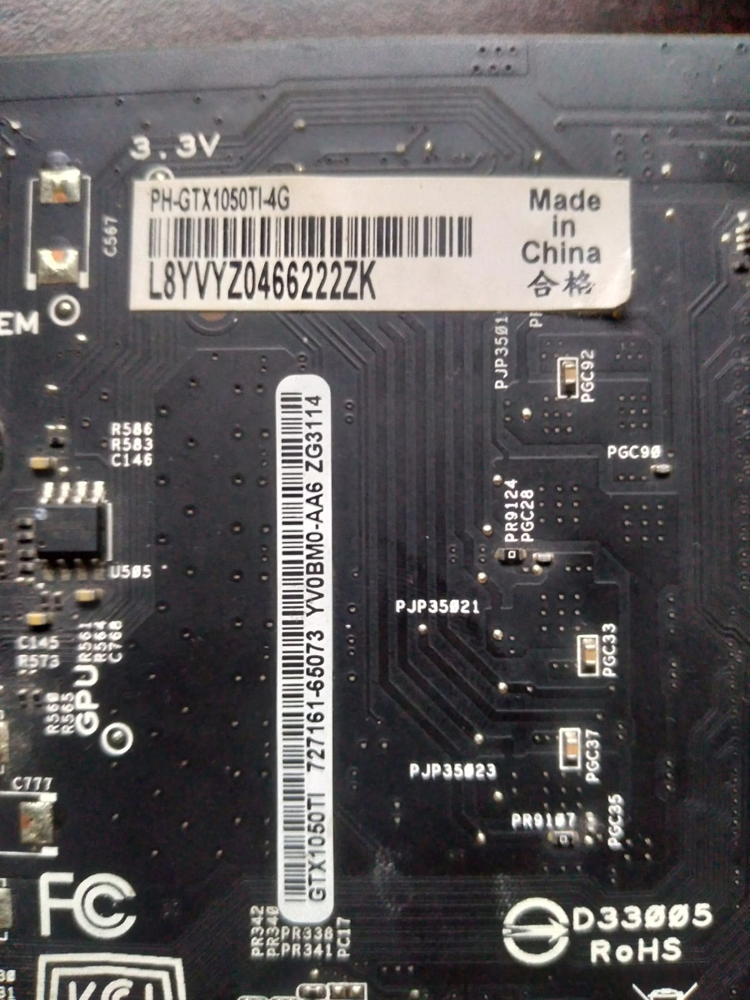
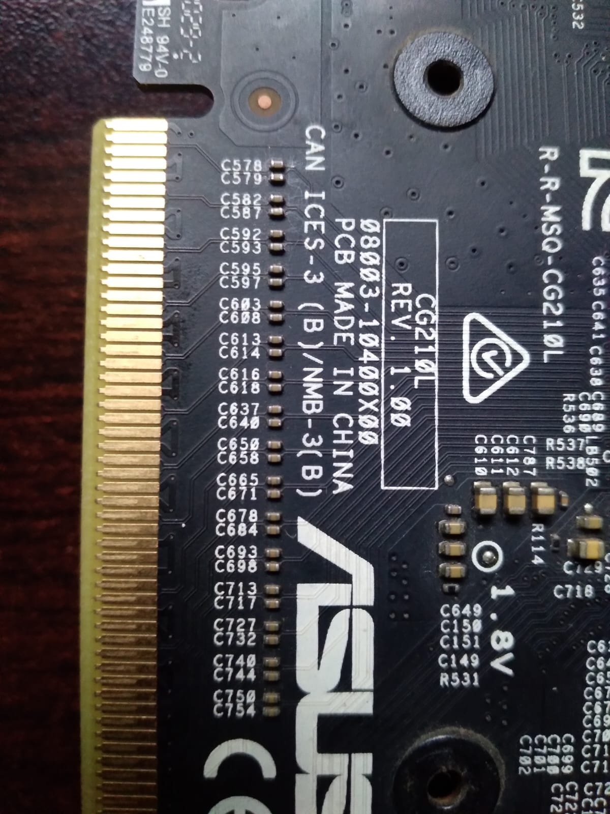
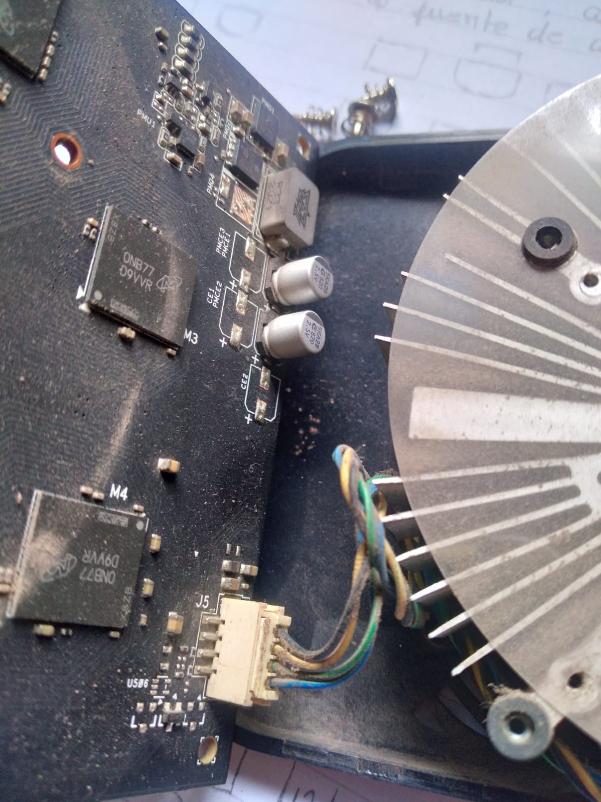
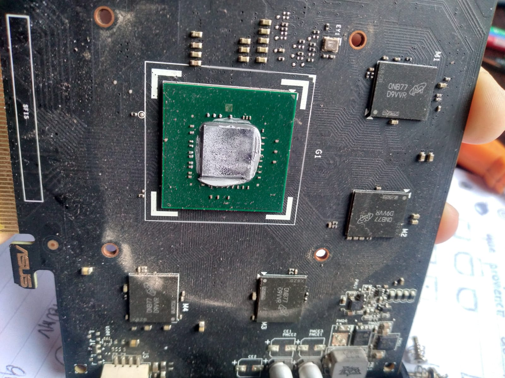
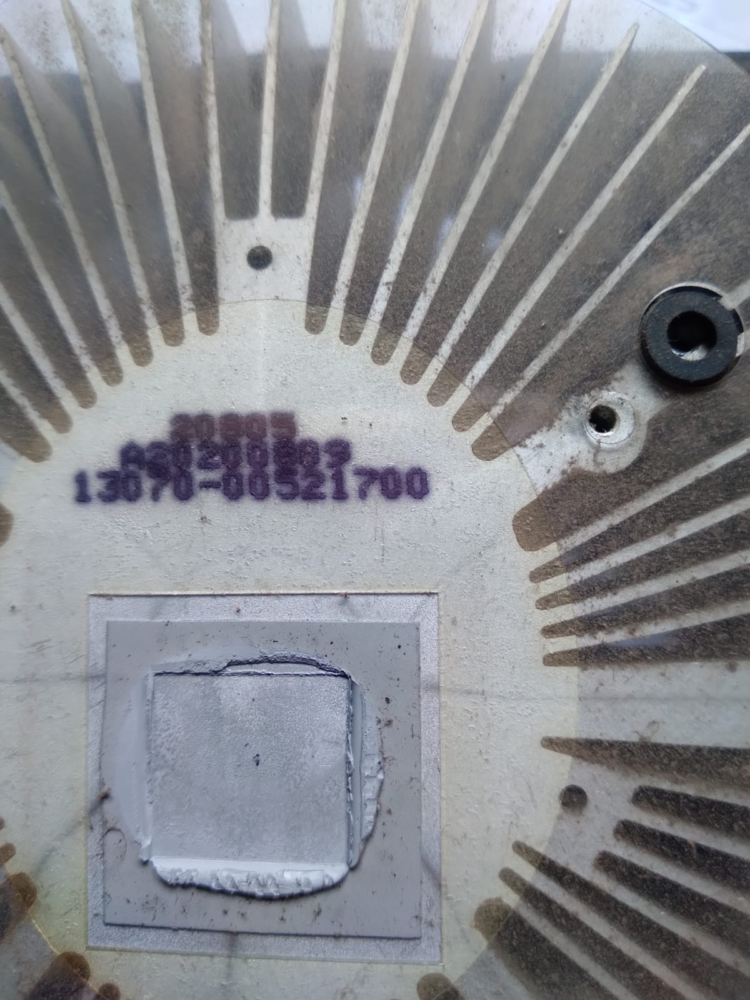
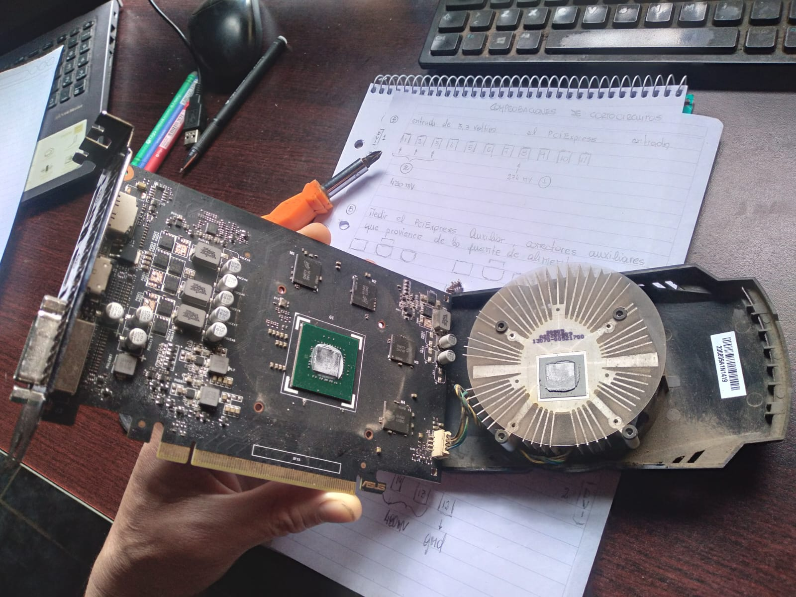
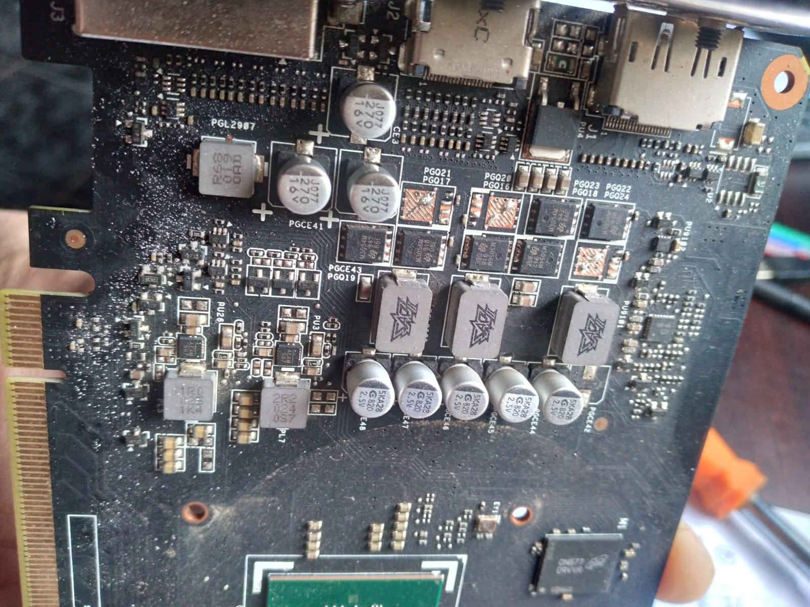
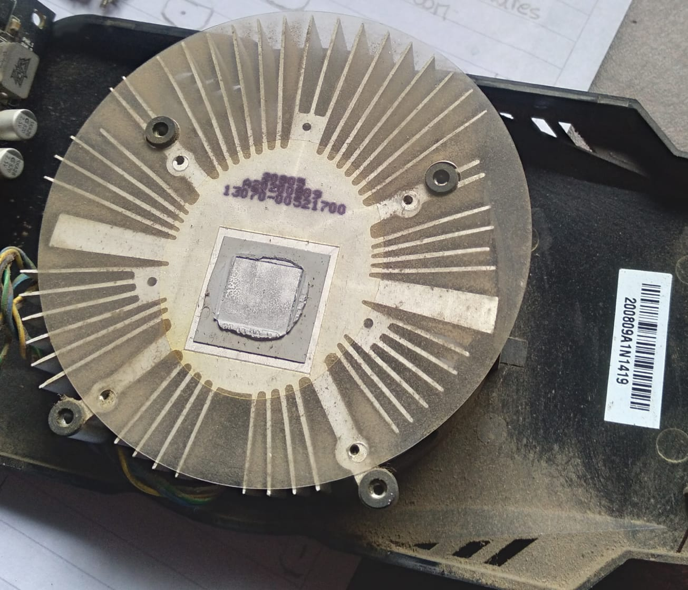
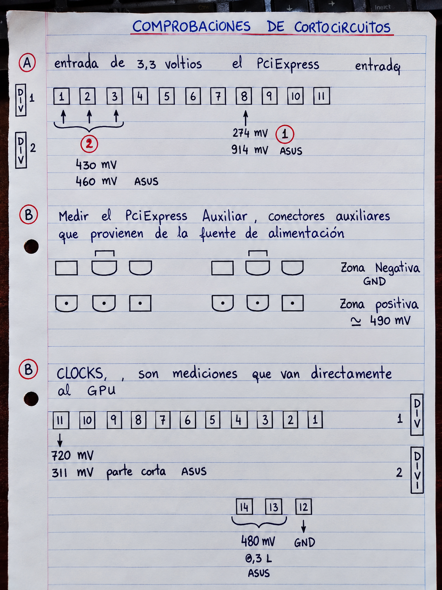

IMG / 01
Identificación de la placa
Etiqueta de modelo PH-GTX1050TI-4G. Los códigos de barras permiten identificar y rastrear el hardware.
Registro fotográfico y documentación de diagnóstico de la placa gráfica.

Etiqueta de modelo PH-GTX1050TI-4G. Los códigos de barras permiten identificar y rastrear el hardware.

Se observa el borde de contactos PCIe y la serigrafía del PCB. Permite identificar la zona de alimentación proveniente del slot.

Se observa el conector J5 y el cableado del ventilador. Permite inspeccionar el enchufe y sus conexiones.

Se observa el procesador gráfico con restos de material térmico y componentes SMD circundantes.

Se aprecia la distribución irregular de la pasta térmica sobre la superficie de contacto del chip.

Placa gráfica desmontada junto al disipador circular. Referencia para ubicar las zonas de inspección.

Se distinguen inductores, capacitores y componentes de potencia asociados a la regulación de tensión.

Se observa la base del disipador y el material térmico remanente. Referencia para la limpieza y el mantenimiento.

Modelo ASUS GTX 1050 Ti. Distribución general de los componentes registrados en la placa.